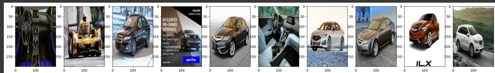

Project Goal:
Classify images of cars by brand, and determine whether a CNN or ViT model performs better on this task
Applications:
- Law enforcement - Many scenarios when license plates are not visible or not readable to a camera, but information around car type would be useful
- Finding lost cars - Could be helpful for drones to identify missing or stolen parked cars
Key Literature:
- An Image is Worth 16x16 Words: Transformers for Image Recognition at Scale, by Dosovitskiy et al., ICLR 2021
- - “Vision Transformer (ViT) attains excellent results compared to state-of-the-art convolutional networks while requiring substantially fewer computational resources to train”
- A Convnet for the 2020s, Liu et al., Conference on Computer Vision and Pattern Recognition 2022
- - “Surprisingly, ConvNeXts, constructed entirely from standard ConvNet modules, compete favorably with Transformers in terms of accuracy, scalability and robustness across all major benchmarks.”
Dataset:
1,000 images scraped from google for 8 car brands, then limited to images that are at least 4 KB to filter out low quality or unapplicable images from the scrape.
Modeling Approach:
- CNN and ViT without transfer learning to serve as baselines for comparison
- CNN with transfer learning using the Inception ResNet V2 pre-trained model
- Vision Transformer with transfer learning using Google’s pretrained VIT model (google/vit-base-patch16-224)
Results:
- ViT with transfer learning: 76% Test Accuracy
- CNN with transfer learning: 75% Test Accuracy
- CNN without transfer learning: 24% Test Accuracy
I observed similar training time for each transfer learning model, and almost the same level of accuracy achieved. This suggests that ViT models may be a viable alternative to CNNs for the task of car brand classification.
Highlighted Code Sections:
import pandas as pd
import numpy as np
import matplotlib.pyplot as plt
import os
from sklearn.model_selection import train_test_split
from sklearn.metrics import confusion_matrix, classification_report
from sklearn.preprocessing import LabelEncoder
from PIL import Image
import cv2
#Utilize tensorflow for initial model exploration
from tensorflow.keras.preprocessing import image
import tensorflow as tf
import tensorflow_datasets as tfds
import keras
from keras import models, layers
from tensorflow.keras.models import Sequential
from tensorflow.keras.layers import Conv2D, MaxPooling2D, Flatten, Dense, Dropout, BatchNormalization, GlobalAveragePooling2D
from tensorflow.keras.optimizers import Adam
from tensorflow.keras.utils import to_categorical
from tensorflow.keras.applications import InceptionResNetV2
from tensorflow.keras.models import Model
import torch
import torch.nn as nn
from torch.utils.data import DataLoader, Dataset
from torchvision import transforms
from transformers import ViTForImageClassification, ViTFeatureExtractor
CNN with transfer learning
# Split data into training and validation sets
X_train, X_val1, y_train, y_val1 = train_test_split(X_resized, y_one_hot, test_size=0.3, random_state=42)
X_val, X_test, y_val, y_test = train_test_split(X_val1, y_val1, test_size=0.3, random_state=42)
# Load InceptionResNetV2 pre-trained model
base_model = InceptionResNetV2(weights='imagenet', include_top=False, input_shape=(299, 299, 3))
# Freeze the base model layers
base_model.trainable = False
# Add custom classification layers
x = base_model.output
x = GlobalAveragePooling2D()(x)
x = Dense(1024, activation='relu')(x)
x = Dropout(0.7)(x) # Dropout for regularization
predictions = Dense(num_classes, activation='softmax')(x)
# Combine base model and custom layers into one model
model = Model(inputs=base_model.input, outputs=predictions)
# Compile the model
model.compile(optimizer=Adam(learning_rate=0.00008),
loss='categorical_crossentropy',
metrics=['accuracy'])
# Train the model
history = model.fit(
X_train, y_train,
validation_data=(X_val, y_val),
batch_size=8,
epochs=15
)
# Fine-tuning (unfreeze the base model for further training)
base_model.trainable = True
fine_tune_lr = 1e-5
model.compile(optimizer=Adam(learning_rate=fine_tune_lr),
loss='categorical_crossentropy',
metrics=['accuracy'])
# Retrain the model
history_fine = model.fit(
X_train, y_train,
validation_data=(X_val, y_val),
batch_size=8,
epochs=15 # Additional fine-tuning epochs
)
ViT with transfer learning
# Define custom dataset
class CarBrandDataset(Dataset):
def __init__(self, images, labels, transform=None):
self.images = images
self.labels = labels
self.transform = transform
def __len__(self):
return len(self.images)
def __getitem__(self, idx):
image = self.images[idx]
label = self.labels[idx]
if self.transform:
image = self.transform(image)
return image, label
# Add preprocessing transforms
feature_extractor = ViTFeatureExtractor.from_pretrained('google/vit-base-patch16-224-in21k')
transform = transforms.Compose([
transforms.ToPILImage(),
transforms.Resize((224, 224)),
transforms.ToTensor(),
transforms.Normalize(mean=feature_extractor.image_mean, std=feature_extractor.image_std),
])
# Encode labels
label_encoder = LabelEncoder()
y_train_encoded = label_encoder.fit_transform(y_train)
y_val_encoded = label_encoder.transform(y_val)
y_test_encoded = label_encoder.transform(y_test)
# Create datasets and dataloaders
train_dataset = CarBrandDataset(X_train, y_train_encoded, transform=transform)
val_dataset = CarBrandDataset(X_val, y_val_encoded, transform=transform)
test_dataset = CarBrandDataset(X_test, y_test_encoded, transform=transform)
train_loader = DataLoader(train_dataset, batch_size=32, shuffle=True)
val_loader = DataLoader(val_dataset, batch_size=32, shuffle=False)
test_loader = DataLoader(test_dataset, batch_size=32, shuffle=False)
# Load pre-trained ViT model
model = ViTForImageClassification.from_pretrained(
'google/vit-base-patch16-224-in21k',
num_labels=len(label_encoder.classes_)
)
model.to(device)
# Loss and optimizer
criterion = nn.CrossEntropyLoss()
optimizer = torch.optim.AdamW(model.parameters(), lr=1e-4)
# Training loop
train_accuracies, val_accuracies, gflops_per_epoch = [], [], []
def train_model(model, train_loader, val_loader, epochs=10):
for epoch in range(epochs):
model.train()
correct_train, total_train = 0, 0
for images, labels in train_loader:
images, labels = images.to(device), labels.to(device)
optimizer.zero_grad()
outputs = model(images).logits
loss = criterion(outputs, labels)
loss.backward()
optimizer.step()
_, predicted = torch.max(outputs, 1)
correct_train += (predicted == labels).sum().item()
total_train += labels.size(0)
train_accuracy = correct_train / total_train
train_accuracies.append(train_accuracy)
# Validation
model.eval()
correct_val, total_val = 0, 0
with torch.no_grad():
for images, labels in val_loader:
images, labels = images.to(device), labels.to(device)
outputs = model(images).logits
_, predicted = torch.max(outputs, 1)
correct_val += (predicted == labels).sum().item()
total_val += labels.size(0)
val_accuracy = correct_val / total_val
val_accuracies.append(val_accuracy)
print(f"Epoch {epoch+1}/{epochs}, Train Accuracy: {train_accuracy:.4f}, "
f"Val Accuracy: {val_accuracy:.4f}, Total GFLOPs: {gflops:.2f}")
# Train the model
train_model(model, train_loader, val_loader, epochs=10)